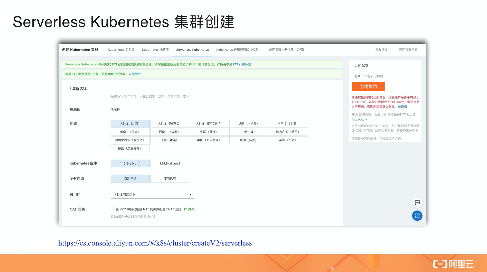
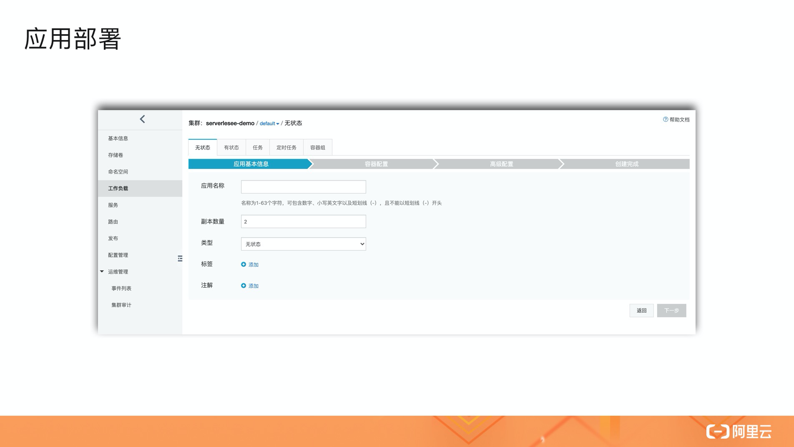
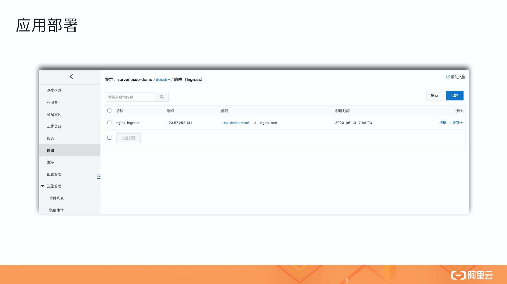
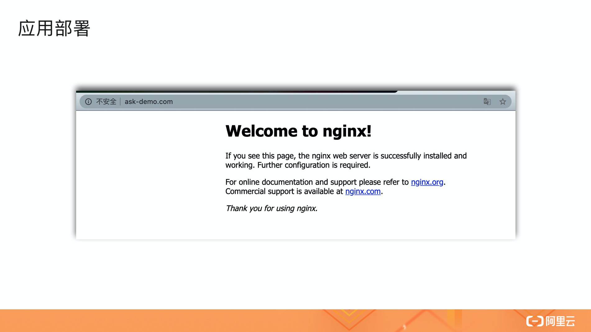
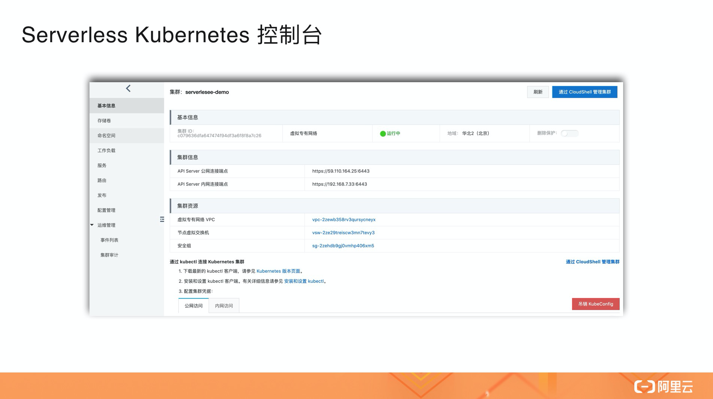
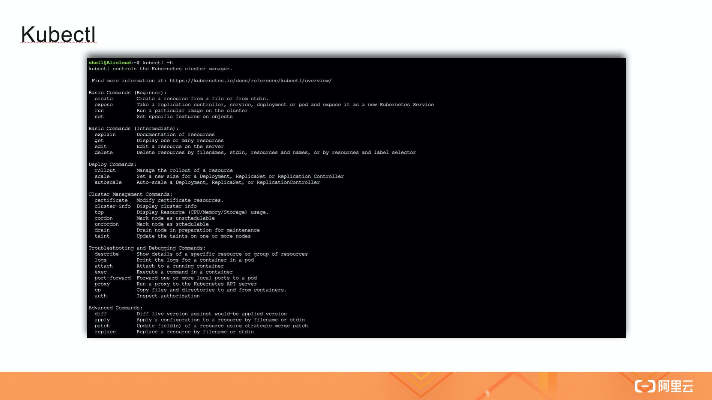

- 01 架构的演进.md
- 02 Serverless 的价值.md
- 03 常见 Serverless 架构模式.md
- 04 Serverless 技术选型.md
- 05 函数计算简介.md
- 06 函数计算是如何工作的？.md
- 07 函数粘合云服务提供端到端解决方案.md
- 08 函数计算的开发与配置.md
- 09 函数的调试与部署.md
- 10 自动化 CI&CD 与灰度发布.md
- 11 函数计算的可观测性.md
- 12 典型案例 1：函数计算在音视频场景实践.md
- 13 典型案例 3：十分钟搭建弹性可扩展的 Web API.md
- 14 Serverless Kubernetes 容器服务介绍.md
- 15 Serverless Kubernetes 应用部署及扩缩容.md
- 16 使用 Spot 低成本运行 Job 任务.md
- 17 低成本运行 Spark 数据计算.md
- 18 GPU 机器学习开箱即用.md
- 19 基于 Knative 低成本部署在线应用，灵活自动伸缩.md
- 20 快速构建 JenkinsGitlab 持续集成环境.md
- 21 在线应用的 Serverless 实践.md
- 22 通过 IDEMaven 部署 Serverless 应用实践.md
- 23 企业级 CICD 工具部署 Serverless 应用的落地实践.md
- 24 Serverless 应用如何管理日志&持久化数据.md
- 25 Serverless 应用引擎产品的流量负载均衡和路由策略配置实践.md
- 26 Spring CloudDubbo 应用无缝迁移到 Serverless 架构.md
- 27 SAE 应用分批发布与无损下线的最佳实践.md
- 28 如何通过压测工具+ SAE 弹性能力轻松应对大促.md
- 29 SAE 极致应用部署效率.md
15 Serverless Kubernetes 应用部署及扩缩容
导读：本文分为三个部分，首先给大家演示 Serverless Kubernetes 集群的创建和业务应用的部署，其次介绍 Serverless Kubernetes 的常用功能，最后对应用扩缩容的操作进行探讨。
集群创建及应用部署
1. 集群创建
在对 Serverless Kubernetes 的基础概念有了充分了解之后，我们直接进入容器服务控制台（https://cs.console.aliyun.com/#/authorize）进行集群的创建。

在创建页面，主要有三类属性需要选择或填写：
- 集群创建的地域和 Kubernetes 的版本信息；
- 网络属性：可以选择容器服务自动创建或者指定已有的 VPC 资源；
- 集群能力和服务：可以按需选择。
属性完成后，点击“创建集群”即可，整个创建过程需要 1~2 分钟的时间。

2. 应用部署
集群创建完成后，接下来我们部署一个无状态的 nginx 应用，主要分成三步：
- 应用基本信息：名称、POD 数量、标签等；
- 容器配置：镜像、所需资源、容器端口、数据卷等；
- 高级配置：服务、路由、HPA、POD 标签等。

创建完成后，在路由中就可以看到服务对外暴露的访问方式了。

如上图所示，在本地 host 绑定 ask-demo.com 到路由端点 123.57.252.131 的解析，然后浏览器访问域名，即可请求到部署的 nginx 应用。
常用功能介绍
我们一般会通过容器服务控制台和 Kubectl 两种方式，来使用 Serverless Kubernetes 的常用功能。
1. 容器服务控制台

在容器服务控制台上，我们可以进行以下功能的白屏化操作：
- 基本信息：集群 ID 和运行状态、API Server 端点、VPC 和安全性、集群访问凭证的查看和操作；
- 存储卷：PV、PVC、StorageClass 的查看和操作；
- 命名空间：集群 namespace 的查看和操作；
- 工作负载：Deployment、StatefulSet、Job、CronJob、Pod 的查看和操作；
- 服务：工作负载提供出的 Service 的查看和操作；
- 路由：Ingress 的查看和操作，用来路由 Service；
- 发布：对基于 Helm 或者容器服务分批发布的任务进行查看和操作；
- 配置管理：对 ConfigMap 和 Secret 的查看和操作；
- 运维管理：集群的事件列表和操作审计。
2. Kubectl
除了通过控制台，我们还可以基于 Kubectl 来进行集群操作和管理。

我们可以在云端通过 CloudShell 来使用 Kubectl，也可以在本地安装 Kubectl，然后通过将集群的访问凭证写入到 kubeconfig 来使用 Serverless Kubernetes 。
应用弹性伸缩
通通过上面的内容讲解，我们已经了解了应用的部署和集群的常用操作，下面为大家介绍一下如何为应用做扩缩容操作。
在 Serverless Kubernetes 中常用的应用扩缩容方式包括：
- 人工扩缩容：最为原始的方式，在成本和应用稳定性上均有一定程度的牺牲；
- HPA（Horizontal Pod Autoscaler）：根据 Cpu 和 Memory 等指标来弹性伸缩，适合有突发流量场景的应用；
- Cron HPA ：根据 Cron 表达式来定期伸缩，适合有固定波峰波谷特性的应用；
- External Metrics（alibaba-cloud-metrics-adapter）：阿里云指标容器水平伸缩，在原生 HPA 的基础上支持更多的数据指标。
结语
以上就是 Serverless Kubernetes 应用部署及扩缩容的全部分享，希望通过这次分享能够帮助大家更好地入门和使用 Serverless Kubernetes，后续也将会有更多的 Serverless Kubernetes 的实践案例分享给大家。
© 2019 - 2023 Liangliang Lee. Powered by gin and hexo-theme-book.